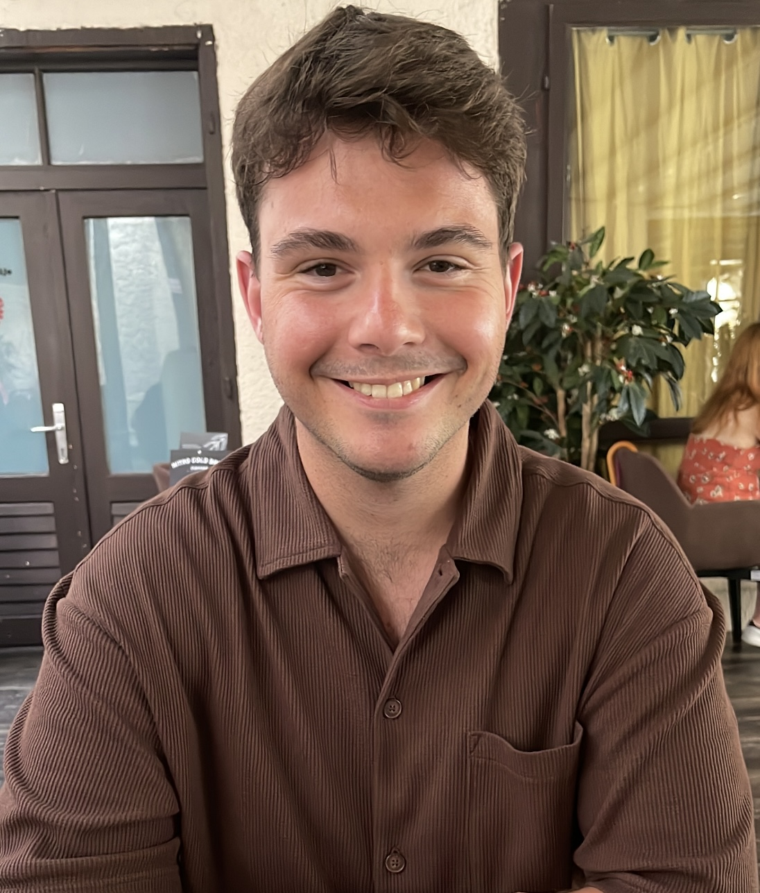

Hi, I'm Antonio Jonjić
I am a Chemistry student with a passion for innovation and problem-solving. I strive to explore new technologies and contribute to making a positive impact on society.
Download My CVI am a Chemistry student with a passion for innovation and problem-solving. I strive to explore new technologies and contribute to making a positive impact on society.
Download My CVI believe it is crucial to think about the environment and embrace circular and green chemistry. I am deeply motivated by the idea that science and technology can be used to solve societal problems and contribute to a better future for humanity, animals, and the planet. The potential to drive positive change through innovative solutions fuels my passion for chemistry. Another source of inspiration comes from my constant curiosity and desire to learn. I strive to contribute to a better and more sustainable world.
As a third-year Organic Chemistry student at Hogeschool Leiden, I have developed a strong foundation in both theory and practice. I’ve gained hands-on experience with advanced analytical tools like GC, GC-MS, HPLC, and 1H-NMR, which have allowed me to analyze chemical samples with precision. Additionally, I’ve worked on synthesizing organic compounds, applying reaction mechanisms, and purifying products, honing my problem-solving skills along the way.
My education has covered a wide range of topics, from organic and inorganic chemistry to analytical chemistry and chemical reaction engineering. These courses have equipped me with the knowledge to approach research critically and with a focus on sustainability. I’m excited to continue building on my technical expertise as I explore new research opportunities and contribute to a more sustainable future.
Outside of my studies, I engage in various hobbies that help me develop my creativity and problem-solving skills. Baking is a perfect combination of science and art for me. The precise measurements and understanding of chemical reactions in the oven are aspects I deeply enjoy, as they mirror the precision required in chemistry. Playing the guitar provides a creative outlet and helps me develop patience and perseverance. Additionally, I have a growing interest in cybersecurity, where I combine my passion for technology and security. These hobbies not only offer relaxation but also enhance my analytical and creative thinking.
Follow Me